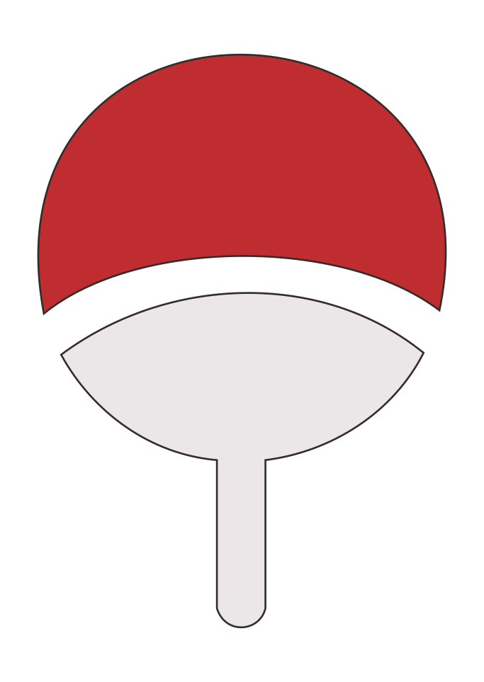

Hello, I'm Augusto Oliveira
Software Developer specialized in Generative AI, Full-Stack Development, and MLOps.

Software Developer specialized in Generative AI, Full-Stack Development, and MLOps.

Software Developer with hands-on experience in architecting and building complex end-to-end solutions, specializing in Generative AI systems and Full-Stack development. My path is marked by the ability to overcome technical challenges and deliver functional products, from data engineering to MLOps pipeline implementation.
My expertise focuses on three main areas: AI & MLOps Engineering (RAG pipelines with LangChain, Milvus, ZenML), Data & Back-end Engineering (Python/Django, Node.js/Express, PostgreSQL), and Front-end Development (Angular, TypeScript, React). I'm passionate about solving problems and collaborating on innovative, high-impact tech products.
From Natal, Brazil 📍🇧🇷
My journey in coding started with curiosity and determination. Learning basic skills, I mastered HTML, CSS, and simple JavaScript.
At IFRN, I honed my skills and learned the fundamentals of web development.
Mastering advanced frameworks and backend technologies gave me the power to build complete solutions.
Now with experience and knowledge, I see the bigger picture in software architecture and solution design.
My journey continues as I pursue mastery in full-stack development, always learning and growing to become an ultimate developer.
Studying web technologies, software development methodologies, and digital solutions creation. Focusing on both front-end and back-end development with practical projects and industry-relevant skills.
I developed and consolidated an end-to-end vehicular access control system, integrating computer vision, real-time communication, and a web management platform, working on both development and system stabilization/validation phases.
Key Achievements:
Technologies: Angular, TypeScript, Node.js, Express.js, MySQL, Docker, MQTT, OAuth2, JWT
I led the end-to-end technical development of "SmartFAQ", a functional Generative AI prototype for automated responses, from conception and data extraction to cloud deployment.
Key Achievements:
Technologies: Python, LangChain, Milvus, ZenML, Airflow, MLflow, Django, Streamlit, Selenium, Docker

A functional Generative AI prototype for automated responses using RAG (Retrieval-Augmented Generation) architecture. Features hybrid search (BM25 + Vector), Milvus vector database, and a SafeGuard security layer for sensitive topics.
End-to-end vehicular access control system integrating computer vision, real-time MQTT communication, and a web management platform with authentication, RBAC, and REST APIs.

A comprehensive Pokédex application built with Ruby and Sinatra, featuring real-time search, dark mode, evolutionary chains, and team building functionality. The app consumes the PokéAPI to provide detailed information about Pokémon.

A RESTful API built with Python and Flask to manage and retrieve quotes from Sasuke Uchiha. Features include random quotes, category filtering, search functionality, and authentication for protected routes.

Student, course, and enrollment management system developed with Django and Django Rest Framework. Built as a technical challenge for an internship position.

Fullstack task management application with Next.js, NestJS, PostgreSQL, and GitHub OAuth authentication. Built as a technical challenge for a Junior Developer position.

Automated scraping system for Natal City Hall with Selenium, 0x0.st upload, and PostgreSQL REST API. Technical challenge demonstrating data extraction skills.

Complete web portal for Catholic prayers with a modern Vatican-inspired interface. Features interactive frontend and Ruby backend for prayer management.

Complete CRUD catalog of jutsus from the Naruto universe developed with Django. Features search, filtering, and detailed jutsu information.
Native Speaker
Advanced
Basic
Basic
My favorite anime is Attack on Titan, but I also enjoy watching Naruto and especially following Sasuke's character development!
I love studying new programming languages and frameworks to expand my knowledge and skills.
I enjoy playing various video games, especially League of Legends and games with rich storytelling.
I'm passionate about cinema and keep track of all the movies I watch on Letterboxd.
I love to drink coffee and explore different brewing methods and bean varieties.
Looking for new opportunities in AI Engineering and Full-Stack Development. Feel free to reach out through any of the channels below!
📍 Based in Natal, Brazil | Open to remote opportunities worldwide
